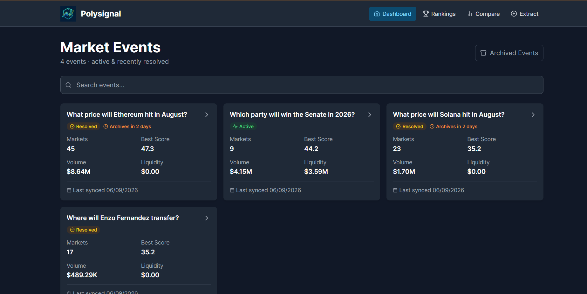
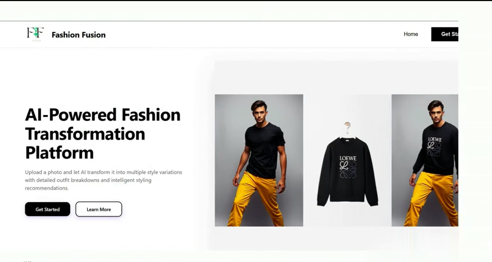
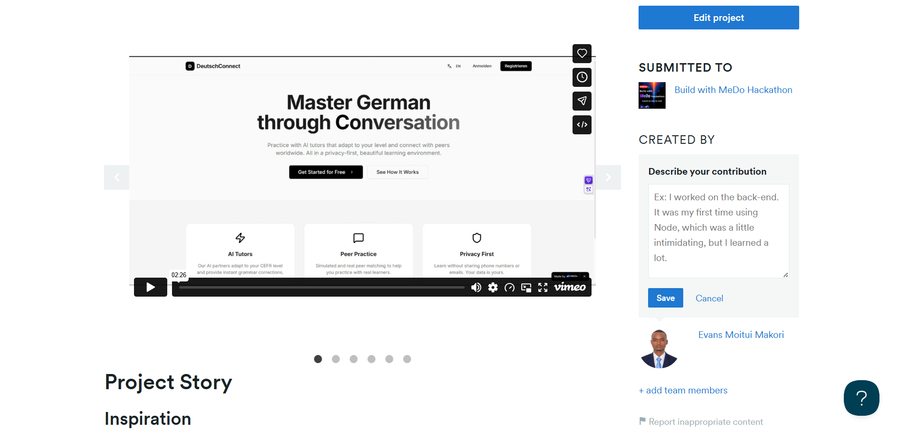
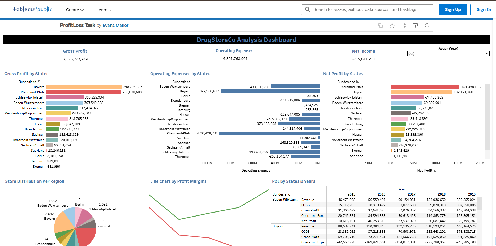

PolySignal - Polymarket Analytics Platform
Real-time Polymarket analytics with ML-powered signals, sentiment analysis, anomaly detection, and a Unified Risk Score.
Business & Data Analytics
Results-driven Business and Data Analyst with 3+ years of experience in data analytics, market research, process optimisation, and delivering AI-powered product solutions across the public and private sectors. Skilled in leveraging Python, SQL, BI tools and AI to generate data-driven insights that improve operational efficiency and drive market growth.
Selected work across analytics, ML, and product engineering.

Real-time Polymarket analytics with ML-powered signals, sentiment analysis, anomaly detection, and a Unified Risk Score.

Upload a photo and generate style variations (professional/casual/streetwear/dinner) with outfit breakdowns and recommendations.

An AI-powered German language companion for interactive practice, conversation, and language coaching.
Tableau Public dashboards and data storytelling projects. Open a tile to explore them on Tableau Public.

A practical stack for shipping analytics end-to-end.
Python, Pandas, NumPy, SQL (PostgreSQL), data modeling, validation.
scikit-learn, forecasting/classification, anomaly detection, evaluation workflows.
FastAPI, WebSockets, React, API design, documentation, deployment basics.
Tableau, KPI design, narrative dashboards, clear charting conventions.
The journey behind the work.
Analysed market trends, user behaviour metrics, and operational data to deliver actionable visual summaries and performance insights for the $IACS token. Published open-source visualisation content (Python, Manim, FFmpeg) on GitHub/YouTube and built automated data workflows to monitor ecosystem KPIs and market performance.
Coordinated cross-functional communication between interns and management. Developed standardised project status presentations for executive stakeholders using Slack and Atlassian tools, and ran market research, contact identification, and documentation pipelines for ongoing digital initiatives.
Maintained database accuracy, data governance, and record compliance across the KEMIS platform. Carried out KEMIS system analysis, documentation, and UAT reporting, and provided IT support, staff training, and system adoption.
Evaluate 37 hackathon submissions focused on system utilities, developer tools, and OS-level applications — assessing functionality, innovation, code quality, and documentation, and assigning fair technical scores via Devpost.
Current degree. Coursework: Accounting & Finance, Business Administration, Math and Statistics.
Graduate degree (2021). Coursework: Quantitative Analysis with Computing.
Badges and verifiable credential links.
Fastest way to reach me: LinkedIn. Email works too.
Email: evamakorieva@gmail.com